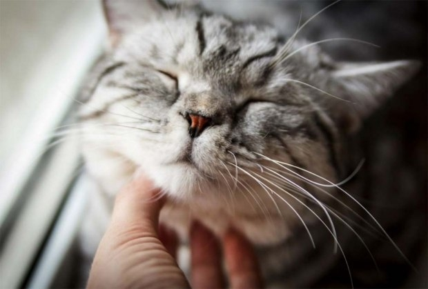

Немного о котах и кошках
Много разных мнений, только как всегда
Всех важнее в доме мнение кота.

Кошки согревают душу. Они умеют успокоить и поддержать одним своим молчаливым участием.

- Кот сибирский
- Кот пушистый
- Нежен мех его душистый
- Сам он важен и спесив -
- Видно, знает, что красив.
Хокку (не про кошек)
- Хитрый рекрутер
- в лунной прохладе замер.
- Ищет джависта.
Что говорит наука о котах и кошках:
Читать здесь